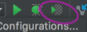
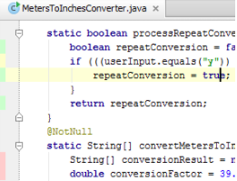

“Nie możesz napisać żadnego produkcyjnego kodu, dopóki nie będziesz miał nie przechodzącego testu.”
TDD
Reguła 2
“Nie możesz napisać więcej testu, jeżeli ten test nie przechodzi. Błąd kompilacji jest nie działajcym testem.”
TDD
Reguła 3
“Nie możesz napisać więcej kodu produkcyjnego, niż ten wymagany do przejścia obecnego testu.”
Red Green Refactor
Testy unitowe
Co powinien testować test unitowy?
Code coverage
Czy należy się tego bać?


Coś poszło nie tak
Rozdział 3
Krok 2 - Wzornictwo
Scenario: Customer has a broker policy so DOB is requested
Given I have a "Broker" policy
When I submit my policy number
Then I should be asked for my date of birth
Testuj zachowanie
Nie testuj implementacji
Coś poszło nie tak
Rozdział 4
Krok 3 - Architektura
Mój projekt
Napisz takie testy, żeby dało się z nich odtworzyć system
Czy testy unitowe pokażą mi bugi w kodzie?
W stronę jakiej architektury się kierować?
Jestem jedno-wątkowy
Oddziel rozwiązywanie problemu, od tworzenia rozwiązania
Jak przetestować metodę prywatą?
Najlepszym sposobem testowania metod prywatnych, jest nie testowanie ich bezpośrednio.
Coś poszło nie tak
Testowałem nie to co trzeba
Rozdział 5
Post TDD
Świadom wad...
TDD nas spowalnia
TDD nas blokuje
Nieczytelne testy
Zależne testy
Ciągły rozwój
“TDD is a technique that evolves together with the practitioner.”